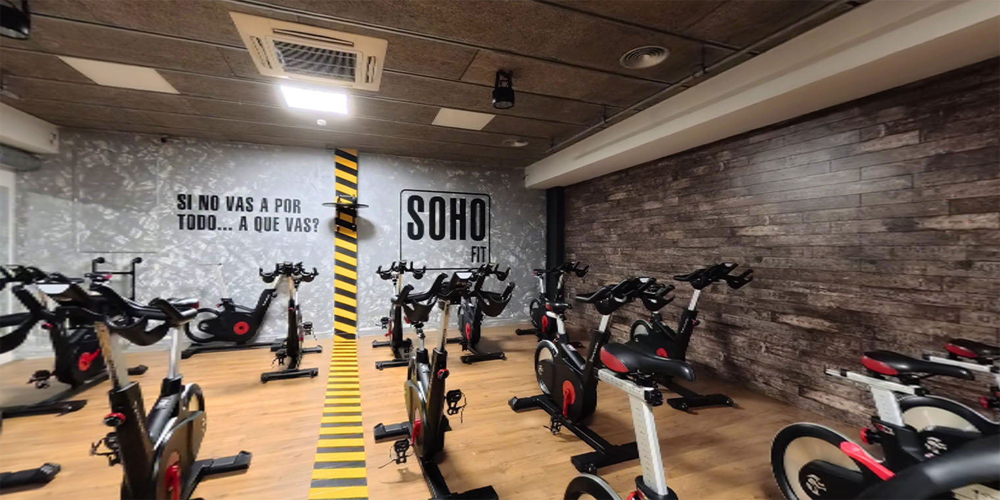
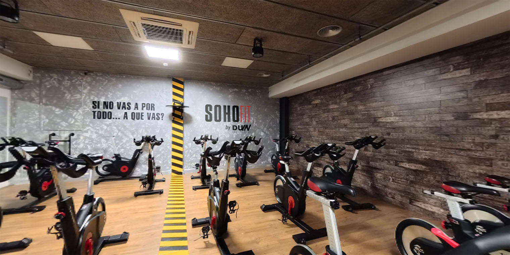
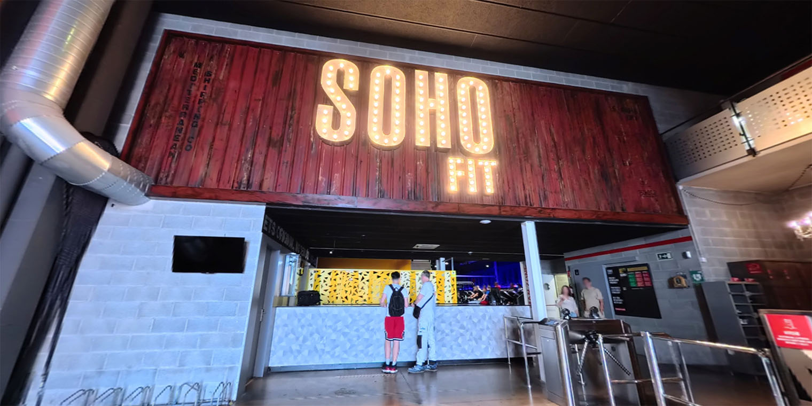
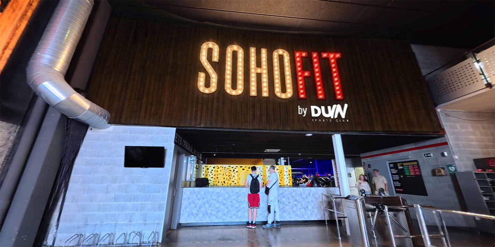

Captura, postproducción y publicación de espacios en 360°. Fotografía inmersiva que permite explorar cualquier lugar desde cualquier pantalla.
DUIN Sports adquiere el Club SOHO de Badalona, un nuevo gimnasio que incorpora a su red de instalaciones. Para presentarlo digitalmente, se capturan imágenes esféricas en 360° de todas las zonas del espacio.
El trabajo no se limita a la captura: la postproducción incluye pixelado de personas para respetar la privacidad, mejora de calidad de imagen, corrección de color y sustitución de elementos de identidad visual; logos del anterior club reemplazados por los de DUIN.
La postproducción de imágenes 360° tiene sus propias particularidades. Al trabajar con proyecciones esféricas, cualquier intervención local afecta a la geometría de la imagen completa. El pixelado de personas, la corrección de logos y la mejora de calidad se hacen teniendo en cuenta esa deformación característica del formato equirectangular.
A continuación, algunos ejemplos del antes y después del proceso:


Sala cycling — cambio logotipo


Entrada — sustitución de logos y ajuste de color